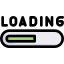
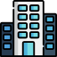
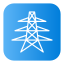
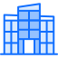
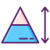

Radio sensitivity (Db) :
Low Quality (Db) :
High quality (Db) :
Exposition threshold (Db) :
Bin size (m):
Area Height (bins) :
Area Width (bins):
Propagation model:
Single Knife Edge (rural)
Bullington (rural)
Epstein Method
Deygout (rural)
Causebrook
Okumura
Okumura-Hata
COST231-Hata (rural,urban)
Walfisch-Ikegami(urban)
Stanford University Interim
duration :
s
constant speed :
variable speed :
Radio technogy:
GSM
UMTS
LTE
LTE-A
TDF
HSDPA
WiMAX
5G-NR
Spectrum(Mhz) :
Band width(Mhz) :
Antenna Model :
Height(m) :
Omni :
Directional :
PIRE:
Tilt :
Azimut :
×
what is your choice?
Origin
Destination